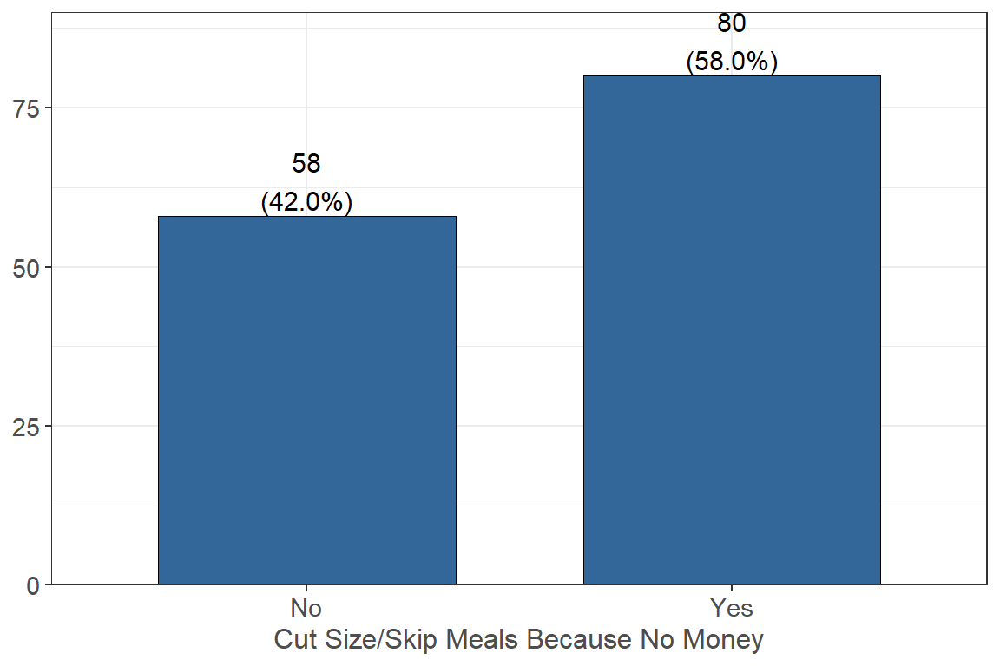
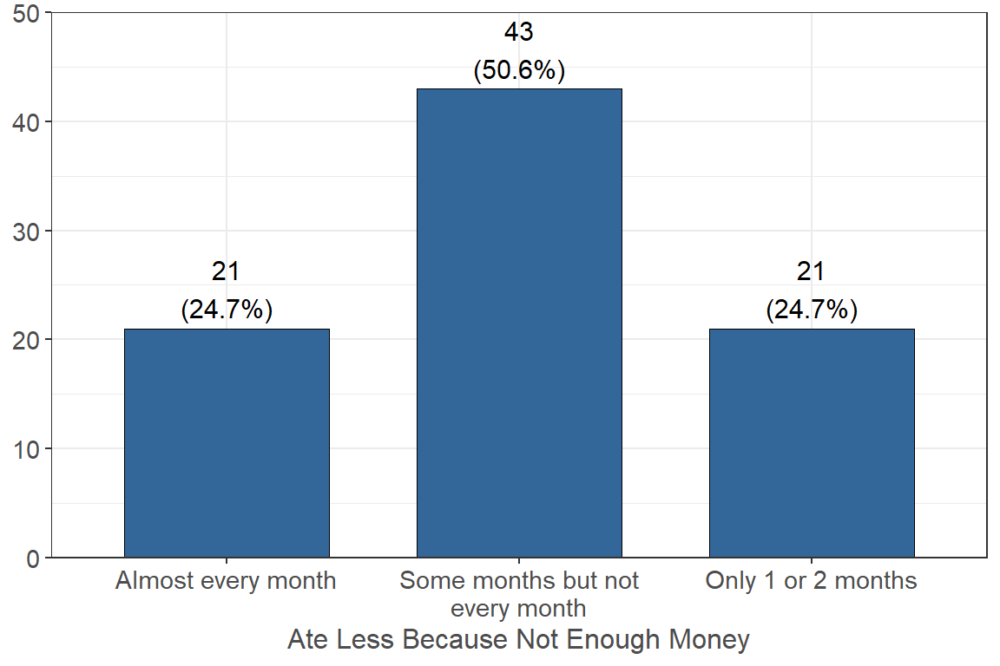

| Housing Situation | n | % |
|---|---|---|
| I am temporarily living with friends or relatives, without permanent housing (couch surfing) | 2 | 1.33 |
| I live in a sorority or fraternity house | 1 | 0.67 |
| I live in a/the university housing or residence halls | 7 | 4.67 |
| I live with parents or other relatives, not paying rent with my own money | 11 | 7.33 |
| I live with parents or other relatives, paying rent with my own money | 4 | 2.67 |
| I own my own home | 2 | 1.33 |
| I rent an apartment or house with roommates | 107 | 71.33 |
| I rent an apartment or house without roommates | 16 | 10.67 |
Over half of respondents, or 54.3%, said it is sometimes true that in the last 12 months, the food that was bought didn’t last and they didn’t have money to get more. 21.4% of respondents said that was often true.
Over half of respondents, or 52.1%, said it is sometimes true that in the last 12 months, they couldn’t afford to eat balanced meals. 23.2% of respondents said that was often true.

Over half of respondents, or 58%, reported that they, or the other adults in their household, cut the size of their meals, or skipped meals, because there was not enough money for food.
Of the respondents that answered yes to cutting the size of their meals, or skipping meals, over half (54.5%) said this happened some months but not every month. 27.3% reported this happened almost every month.
The majority of respondents, or 61.8%, reported eating less then they felt they should over the last 12 months because there was not enough money for food.

Of those that responded yes that they ate less because there was not enough money for food, about half (50.6%) reported this happened some months but not every month. 24.7% of respondents reported this happened almost every month.
Over half of respondents, or 54.5%, reported that there were times they were hungry but did not eat because there wasn’t enough money for food.
Of those that responded yes they were hungry but did not eat because lack of money for food, more than half, or 55.3%, reported this happened some months but not every month. 22.4% of respondents reported this happened almost every month.
Most respondents (67.4%) reported they did not lose weight because there wasn’t enough money for food.
Most respondents (74.8%) reported that none of the adults in their household ever went a whole day without eating because there wasn’t enough money for food.
Out of the 34 respondents that answered yes, either they or their adult household member went a whole day without eating because there wasn’t enough money for food, over half (51.6%) reported this happened some months but not every month. 22.6% reported this happened every month.
Food insecurity is defined by meeting 2 or more of the following criteria:
*Selecting sometimes true or often true for not having enough food or money to last and not being able to afford balanced meals.
*Selecting yes for any of the 5 prior bulleted, bold questions.
The majority of respondents, or 65.3%, reported that yes, they were food insecure in the last 12 months. 34.7% reported that no, they were not food insecure.
How many days in the past month have you experienced heightened anxiety, stress, depression and/or problems with emotions?
By Gender Identity
All but three respondents selected either Male or Female for their gender identity. Their response distribution is below.
Gender Queer or Gender-Nonconforming, one reported 15-29 days, the other 30+ days.Gender Unlisted reported 10 days.Have you received or tried to receive mental health services over the past 12months?
Over half of the respondents, or 58.9%, answered no when asked if they had received, or tried to receive, mental health services over the past 12 months.